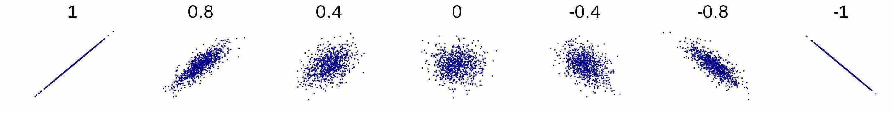
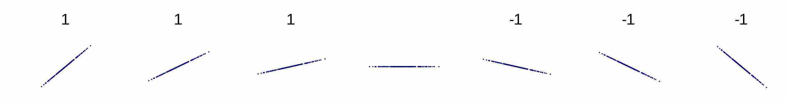
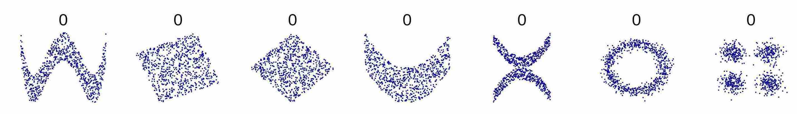

Planetary diameter and number of moons
According to the National Aeronautics and Space Administration (NASA), these are the diameters (in kilometres) and number of moons for each of the eight planets in our solar system:
Planet Diameter Moons
-------- -------- -----
Mercury 4,879 0
Venus 12,104 0
Earth 12,756 1
Mars 6,792 2
Jupiter 142,984 79
Saturn 120,536 82
Uranus 51,118 27
Neptune 49,528 14A quick inspection of this data suggests that there's a positive relationship between the diameter of a planet and its number of moons: the larger the diameter, the larger the number of moons; the smaller the diameter, the smaller the number of moons.
We can confirm this by visualising the data using points, mapping the diameter variable to one position of a point and the moons variable to the other:
This positive relationship between diameter and number of moons looks to be linear. We can confirm this too, by adding a line of best fit, and noticing that it fits the points closely:
As you can see, the relationship is close to linear, but it's not perfect. How linear is it?
The Pearson correlation coefficient
We can quantify this, by calculating the Pearson correlation coefficient between the diameter variable and the moons variable. The Pearson correlation coefficient measures the direction and strength of a linear relationship between two variables. It's often just called "the correlation coefficient".
There are a number of different ways of calculating the correlation coefficient, all of which give the same result. Here's one way. Suppose that the two variables are called $X$ and $Y$. Suppose there are $n$ cases in the data. Let the values of $X$ be $x_1, ..., x_n$ and the values of $Y$ be $y_1, ..., y_n$. Let $\bar{x}$ be the mean of the $X$ values and let $\bar{y}$ be the mean of the $Y$ values. Then:
$$ \text{Correlation coefficient} = \frac{\sum_{i=1}^n (x_i-\bar{x})(y_i-\bar{y}) }{\sqrt{\sum_{i=1}^n (x_i-\bar{x})^2}\sqrt{\sum_{i=1}^n (y_i-\bar{y})^2}} $$
The most important part of this fraction is the numerator (the top). For each case in the data, we find the difference between its $X$ value and the mean $X$ value, the difference between its $Y$ value and the mean $Y$ value, and multiply the two. If the $X$ and $Y$ values are both greater than their means, then the two numbers are both positive, and the product is positive. If they are both less than their means, then the two numbers are both negative, and the product is again positive. If one value is greater than its mean and the other is less than its mean, then one number is positive and the other is negative, and the product is negative. When the values are on the same side of their mean, this increases the correlation coefficient; when they are on oppposite sides, this decreases it.
The bottom part is always some positive number. It's there to make sure that the final result is always between -1 and 1 (inclusive).
An illustration
You'll hardly ever have to calculate correlation coefficients manually - you'll generally get your software to do it for you. But it's good to understand how the the calculation goes, and the best way to do that is to work through an example. So let's calculate the correlation coefficient between the diameter and moons variables in the planet data set.
To save space, we'll use "D" for "Diameter", "M" for "Moons", "MD" for the mean diameter, and "MM" for the mean number of moons.
Mean diameter (MD) = 400,697/8 = 50,087
Mean moons (MM) = 205/8 = 25.6
D D-MD (D-MD)^2 M M-MM (M-MM)^2 (D-MD)(M-MM)
------- ------- -------------- ----- ----- -------- ------------
4,879 -45,208 2,043,763,264 0 -25.6 655.36 1,157,324.8
12,104 -37,983 1,442,708,289 0 -25.6 655.36 972,364.8
12,756 -37,331 1,393,603,561 1 -24.6 605.16 918,342.6
6,792 -43,295 1,874,457,025 2 -23.6 556.96 1,021,762.0
142,984 92,897 8,629,852,609 79 53.4 2,851.56 4,960,699.8
120,536 70,449 4,963,061,601 82 56.4 3,180.96 3,973,323.6
51,118 1,031 1,062,961 27 1.4 1.96 1,443.4
49,528 -559 312,481 14 -11.6 134.56 6,484.4
------- ------- -------------- ----- ----- -------- ------------
400,697 20,348,821,791 205 8641.88 13,011,745.4$$ \begin{align*} r &= \dfrac{\sum (D-MD)(M-MM) }{\sqrt{\sum (D-MD)^2}\sqrt{\sum (M-MM)^2}} \\ &= \dfrac{13,011,745.4}{\sqrt{20,348,821,791}\sqrt{8641.88}} \\ &= 0.98 \\ \end{align*} $$
So the correlation coefficient is 0.98.
Key properties
Here are the key properties of the correlation coefficient:
-
The correlation coefficient is symmetric in the two variables - it doesn't matter which variable we use as the first variable and which we use as the second, the result is the same either way. In other words, the correlation coefficient between $X$ and $Y$ is equal to the correlation coefficient between $Y$ and $X$.
-
The correlation coefficient is always a unitless number. Even if the values of $X$ are, say kilograms, and the values of $Y$ are, say, in metres, the correlation coefficient is just a number with no units. This is guaranteed by the denominator (the bottom part) - any units for $X$ that appear in the numerator also appear in the denominator, and they cancel out. And so too for $Y$.
-
The correlation coefficient is always between -1 and +1, inclusive. This is also guaranteed by the denominator (as mentioned above).
-
The sign of the correlation coefficient tells us the direction of the relationship, positive or negative. If the sign is positive, then the direction is positive, which means that as one variable increases, so does the other, and as one variable decreases, so does the other. If the sign is negative, then the direction is negative, which means that as one variable increases, the other decreases, and as one variable decreases, the other increases.
-
The magnitude of the correlation coefficient tells us the strength of the relationship. The closer it is to 1, the stronger the relationship; the closer it is to 0, the weaker the relationship. So, correlation coefficients of 0.87 and -0.87 are both stronger than correlation coefficients of 0.43 and -0.43. Notice that when we're assessing strength we ignore the sign of the number - it's just the magnitude that matters. (The sign tells us the direction.)


From numbers to words
When reporting the magnitude of the correlation coefficient between two variables it's sometimes more convenient to use words rather than a number. Words are less precise, but they're more meaningful to non-expert audiences. The following conversions from numbers to words are often used:
Number Words
--------- -----------
0.0 - 0.2 Very weak
0.2 - 0.4 Weak
0.4 - 0.6 Moderate
0.6 - 0.8 Strong
0.8 - 1.0 Very strongTwo odd cases
There are two cases in which the correlation coefficient might seem a little odd: when the relationship between $X$ and $Y$ is a perfectly horizontal line, or a perfectly vertical line. For example:
You might expect the correlation coefficient in this case to have magnitude 1, because the relationship is perfectly linear. What about the sign? The relationship is neither positive or negative: as the $X$ variable increases, the $Y$ variable neither increases nor decreases; similarly, when the $X$ variable decreases, the $Y$ variable neither increases nor decreases. So there is no sign, which means that the correlation coefficient is undefined. Indeed, you can see that it's undefined by considering the equation above. The $Y$ values are all the same. That means that the mean $Y$ value is the same value too, and the difference between each $Y$ value and its mean is 0. So the sum of those differences is also 0. So we have to divide by 0 to get the correlation coefficient, which we can't do - it's undefined.
$$ \sqrt{\sum_{i=1}^n (y_i-\bar{y})^2} $$
Here's the other case:
A caution
There's a right and a wrong way to use the correlation coefficient.
Here's the right way. First, visualise the relationship, if any, between $X$ and $Y$. If the plot shows that there's a linear relationship, you can use the correlation coefficient to measure its direction and strength.
Here's the wrong way. Don't work the other way around: don't calculate the correlation coefficient and use that to tell whether there's a linear relationship. It can be hard to tell from the number alone what kind of relationship there is, if any.
Here's an illustration:

And consider the following four data sets, which all have the same correlation coefficient of ??:
svg()
par(mfrow=c(2,2), pch=19)
plot(anscombe$x1, anscombe$y1, xlim=c(0,20), ylim=c(0,14), main="Data set 1", xlab="x", ylab="y")
plot(anscombe$x2, anscombe$y2, xlim=c(0,20), ylim=c(0,14), main="Data set 2", xlab="x", ylab="y")
plot(anscombe$x3, anscombe$y3, xlim=c(0,20), ylim=c(0,14), main="Data set 3", xlab="x", ylab="y")
plot(anscombe$x4, anscombe$y4, xlim=c(0,20), ylim=c(0,14), main="Data set 4", xlab="x", ylab="y")Only the first case can the correlation coefficient be considered useful. In the second case it's curved. In the third and fourth cases there's an outler distirting the results.